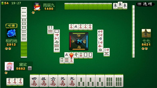

大家都知道吃碰会使你的牌想向一个方向前进，也使你做牌成为大家公有的信息，也就是说你选择余地少了和其他人判断你的牌情有了更好的依据。目的都是向你打牌计划更多靠拢，好牌谁都知道怎么打。但在坏牌的时候，如三门有三色迹象，有风有箭，又有五门齐迹象，假设三色60%,五门齐40%。
你吃碰时候，就注意，如果吃碰对两种变化都有益，当然吃碰了，吃碰后会很难打牌，例如都变成50%可能，且变化减少了，最好不吃碰。吃碰在计划后。细心体会这一原则，对你以后进步有很大好处。

不求人和全求人在国标已经入门的人，都不应该在开局计划内，从来不可能说，一上手的牌，就说我要做全求人和不求人。所以记住：那是在中局的时候根据大家牌情和手里上牌情况做出的。